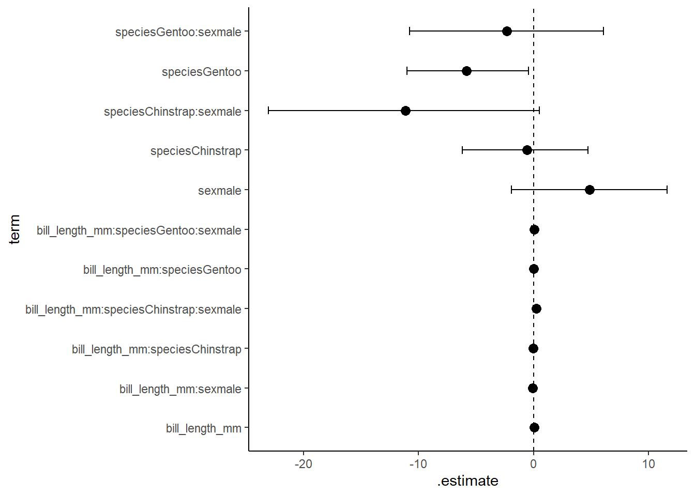
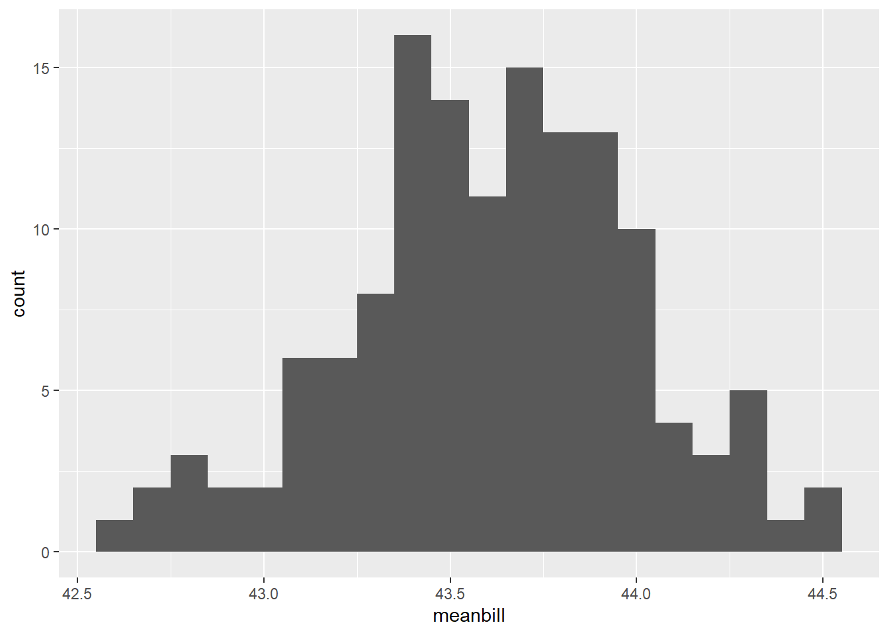
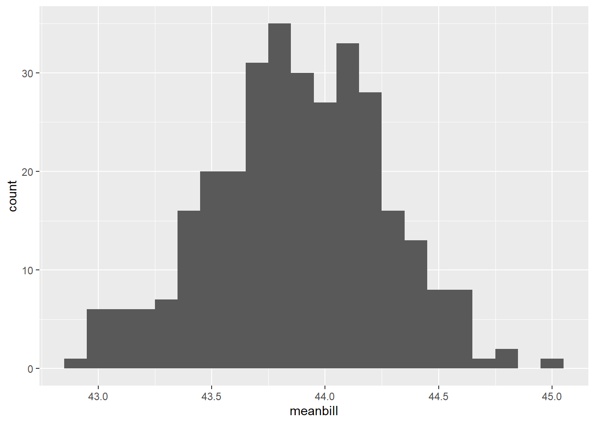
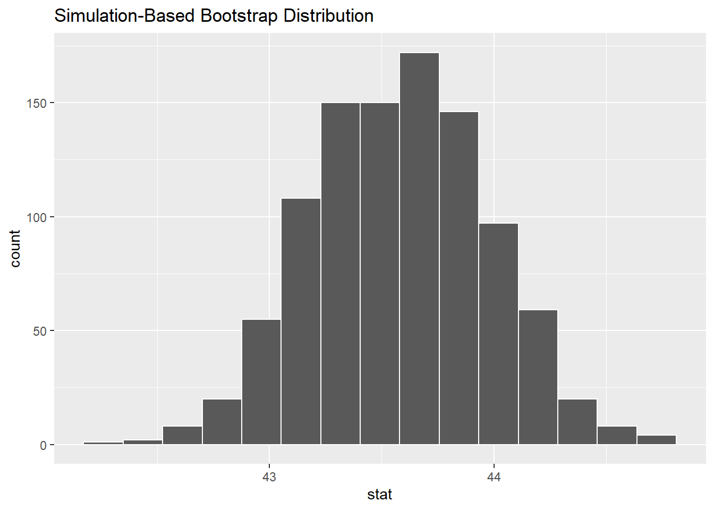
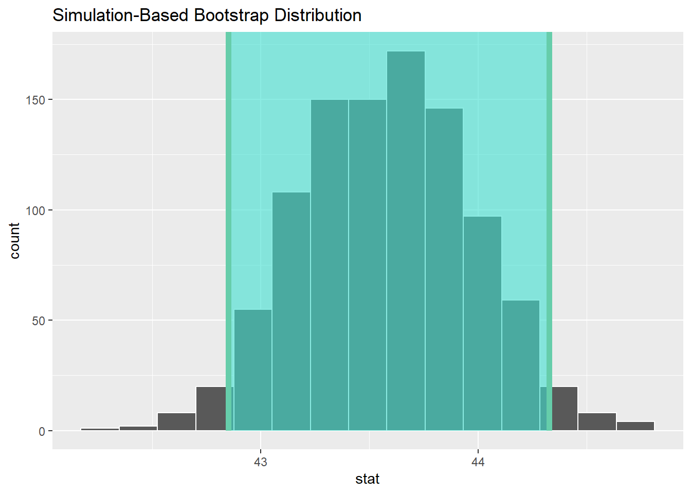

library(tidyverse)
library(palmerpenguins)
library(data.table)
library(performance)
library(patchwork)
library(rsample) #for lm bootstraps
library(car) #to check collinearity
library(skimr)
library(broom)Bootstrapping and Confidence Intervals
Bootstrapping (and eventually confidence intervals)
Resources
Smith College SDS CIs tutorial
Modern Data Science with R text chapter
Load Packages
Get Penguins data!
penguins<-palmerpenguins::penguinsFit a simple LM and have a look at results
simple_mod<-lm(bill_depth_mm ~ bill_length_mm*species*sex, data=penguins)
summary(simple_mod)
Call:
lm(formula = bill_depth_mm ~ bill_length_mm * species * sex,
data = penguins)
Residuals:
Min 1Q Median 3Q Max
-2.06730 -0.52452 -0.06471 0.45593 2.90319
Coefficients:
Estimate Std. Error t value Pr(>|t|)
(Intercept) 14.84023 1.77185 8.376 1.73e-15
bill_length_mm 0.07466 0.04749 1.572 0.1169
speciesChinstrap -0.25160 2.77579 -0.091 0.9278
speciesGentoo -5.76780 2.98938 -1.929 0.0546
sexmale 4.92359 2.46355 1.999 0.0465
bill_length_mm:speciesChinstrap -0.01026 0.06596 -0.155 0.8765
bill_length_mm:speciesGentoo 0.03871 0.07101 0.545 0.5860
bill_length_mm:sexmale -0.09177 0.06360 -1.443 0.1500
speciesChinstrap:sexmale -11.35403 5.67926 -1.999 0.0464
speciesGentoo:sexmale -2.41202 3.94469 -0.611 0.5413
bill_length_mm:speciesChinstrap:sexmale 0.24451 0.12006 2.037 0.0425
bill_length_mm:speciesGentoo:sexmale 0.06197 0.09131 0.679 0.4978
(Intercept) ***
bill_length_mm
speciesChinstrap
speciesGentoo .
sexmale *
bill_length_mm:speciesChinstrap
bill_length_mm:speciesGentoo
bill_length_mm:sexmale
speciesChinstrap:sexmale *
speciesGentoo:sexmale
bill_length_mm:speciesChinstrap:sexmale *
bill_length_mm:speciesGentoo:sexmale
---
Signif. codes: 0 '***' 0.001 '**' 0.01 '*' 0.05 '.' 0.1 ' ' 1
Residual standard error: 0.8175 on 321 degrees of freedom
(11 observations deleted due to missingness)
Multiple R-squared: 0.8334, Adjusted R-squared: 0.8277
F-statistic: 145.9 on 11 and 321 DF, p-value: < 2.2e-16broom::tidy(simple_mod)# A tibble: 12 × 5
term estimate std.error statistic p.value
<chr> <dbl> <dbl> <dbl> <dbl>
1 (Intercept) 14.8 1.77 8.38 1.73e-15
2 bill_length_mm 0.0747 0.0475 1.57 1.17e- 1
3 speciesChinstrap -0.252 2.78 -0.0906 9.28e- 1
4 speciesGentoo -5.77 2.99 -1.93 5.46e- 2
5 sexmale 4.92 2.46 2.00 4.65e- 2
6 bill_length_mm:speciesChinstrap -0.0103 0.0660 -0.155 8.77e- 1
7 bill_length_mm:speciesGentoo 0.0387 0.0710 0.545 5.86e- 1
8 bill_length_mm:sexmale -0.0918 0.0636 -1.44 1.50e- 1
9 speciesChinstrap:sexmale -11.4 5.68 -2.00 4.64e- 2
10 speciesGentoo:sexmale -2.41 3.94 -0.611 5.41e- 1
11 bill_length_mm:speciesChinstrap:sexmale 0.245 0.120 2.04 4.25e- 2
12 bill_length_mm:speciesGentoo:sexmale 0.0620 0.0913 0.679 4.98e- 1Now, let’s bootstrap!
Bootstrapping is a resampling technique. We will discuss how it works!
set.seed(356) #any number is fine
penguins_intervals<- reg_intervals(bill_depth_mm ~ bill_length_mm*species*sex, data=penguins,
type='percentile',
keep_reps=FALSE)
penguins_intervals# A tibble: 11 × 6
term .lower .estimate .upper .alpha .method
<chr> <dbl> <dbl> <dbl> <dbl> <chr>
1 bill_length_mm -0.0441 0.0722 0.188 0.05 percen…
2 bill_length_mm:sexmale -0.264 -0.0907 0.0827 0.05 percen…
3 bill_length_mm:speciesChinstrap -0.138 -0.00259 0.135 0.05 percen…
4 bill_length_mm:speciesChinstrap:se… -0.0130 0.239 0.495 0.05 percen…
5 bill_length_mm:speciesGentoo -0.0959 0.0401 0.171 0.05 percen…
6 bill_length_mm:speciesGentoo:sexma… -0.141 0.0598 0.266 0.05 percen…
7 sexmale -1.93 4.87 11.6 0.05 percen…
8 speciesChinstrap -6.21 -0.584 4.73 0.05 percen…
9 speciesChinstrap:sexmale -23.0 -11.1 0.527 0.05 percen…
10 speciesGentoo -11.0 -5.82 -0.426 0.05 percen…
11 speciesGentoo:sexmale -10.8 -2.30 6.08 0.05 percen…#plot the results
penboots<-ggplot(data=penguins_intervals, aes(x=.estimate, y=term))+
geom_vline(xintercept=0, linetype=2)+
geom_errorbarh(aes(xmin=.lower, xmax=.upper),height=0.2)+
geom_point(size=3)+
theme_classic()
penboots
Understanding resampling and bootstrapping using tidyverse
Let’s take a sample of the penguins data
lilpen<- penguins %>%
slice_sample(n=10, replace= FALSE) %>%
select(species, sex, year, bill_length_mm)
lilpen# A tibble: 10 × 4
species sex year bill_length_mm
<fct> <fct> <int> <dbl>
1 Gentoo female 2007 48.7
2 Adelie male 2008 39.6
3 Gentoo female 2009 50.5
4 Adelie female 2007 40.3
5 Gentoo male 2008 44.4
6 Adelie female 2009 40.2
7 Gentoo female 2007 46.2
8 Gentoo female 2007 45.1
9 Chinstrap female 2007 58
10 Gentoo male 2009 52.5#let's turn resampling on (let's us include duplicates-- we can choose from entire dataset AGAIN when we collect a separate sample)
lilpen2<- penguins %>%
slice_sample(n=10, replace= TRUE) %>%
select(species, sex, year, bill_length_mm)
lilpen2 #if we run this enough times we will eventually see duplicates! This is the concept upon which bootstrapping is based# A tibble: 10 × 4
species sex year bill_length_mm
<fct> <fct> <int> <dbl>
1 Adelie male 2008 40.1
2 Gentoo female 2008 45.5
3 Chinstrap male 2007 51.3
4 Gentoo female 2007 46.5
5 Adelie female 2008 33.1
6 Adelie female 2008 35.5
7 Adelie female 2007 39.5
8 Chinstrap male 2007 48.5
9 Adelie female 2009 39.6
10 Gentoo male 2009 46.8Now we can scale up (working towards bootstrapping)
n<- 200
orig_sample <- penguins %>%
slice_sample(n=n, replace=FALSE)
orig_sample# A tibble: 200 × 8
species island bill_length_mm bill_depth_mm flipper_length_mm body_mass_g
<fct> <fct> <dbl> <dbl> <int> <int>
1 Adelie Biscoe 39.7 17.7 193 3200
2 Gentoo Biscoe 47.5 14 212 4875
3 Chinstrap Dream 50.5 18.4 200 3400
4 Gentoo Biscoe 46.6 14.2 210 4850
5 Chinstrap Dream 46.6 17.8 193 3800
6 Adelie Dream 40.3 18.5 196 4350
7 Gentoo Biscoe 45.1 14.4 210 4400
8 Adelie Biscoe 35.3 18.9 187 3800
9 Gentoo Biscoe 45.1 14.5 207 5050
10 Gentoo Biscoe 42.9 13.1 215 5000
# ℹ 190 more rows
# ℹ 2 more variables: sex <fct>, year <int>#with this sample in hand we can draw a rsample of the sample size and calc mean arrival dealy
orig_sample %>%
slice_sample(n=n, replace=TRUE) %>%
summarize(meanbill=mean(bill_length_mm))# A tibble: 1 × 1
meanbill
<dbl>
1 NA#44.2
#compare to orignal dataset
penguins %>%
summarize(meanbill=mean(bill_length_mm))# A tibble: 1 × 1
meanbill
<dbl>
1 NA#44.0 -- different because n=150 in the df but we sampled extra (n=200)
#by repeating this process many times we can see how much variation there is from sample to sample
pen_200_bs<- 1:1000 %>% #1000 = number of trials / resamples
map_dfr(
~orig_sample %>%
slice_sample(n=n, replace=TRUE) %>%
summarize(meanbill=mean(bill_length_mm))) %>%
mutate(n=n)
pen_200_bs #you will see we now have means for 1000 trials!# A tibble: 1,000 × 2
meanbill n
<dbl> <dbl>
1 NA 200
2 NA 200
3 NA 200
4 NA 200
5 43.6 200
6 NA 200
7 NA 200
8 NA 200
9 44.0 200
10 NA 200
# ℹ 990 more rowsWe can compare outputs to see how things change
pen_200_bs %>%
skim(meanbill) #mean = 44, sd=0.391| Name | Piped data |
| Number of rows | 1000 |
| Number of columns | 2 |
| _______________________ | |
| Column type frequency: | |
| numeric | 1 |
| ________________________ | |
| Group variables | None |
Variable type: numeric
| skim_variable | n_missing | complete_rate | mean | sd | p0 | p25 | p50 | p75 | p100 | hist |
|---|---|---|---|---|---|---|---|---|---|---|
| meanbill | 863 | 0.14 | 43.62 | 0.39 | 42.58 | 43.39 | 43.61 | 43.86 | 44.54 | ▁▃▇▆▂ |
#histo
bootplot<-ggplot(data=pen_200_bs, aes(x=meanbill))+
geom_histogram(binwidth=0.1)
bootplotWarning: Removed 863 rows containing non-finite values (`stat_bin()`).
#check against original df
pen_df_bs<- 1:1000 %>% #1000 = number of trials / resamples
map_dfr(
~penguins %>%
slice_sample(n=n, replace=TRUE) %>%
summarize(meanbill=mean(bill_length_mm))) %>%
mutate(n=n)
pen_df_bs # A tibble: 1,000 × 2
meanbill n
<dbl> <dbl>
1 NA 200
2 NA 200
3 NA 200
4 NA 200
5 NA 200
6 44.1 200
7 NA 200
8 NA 200
9 NA 200
10 NA 200
# ℹ 990 more rowspen_df_bs %>%
skim(meanbill) #mean=44, sd=0.370| Name | Piped data |
| Number of rows | 1000 |
| Number of columns | 2 |
| _______________________ | |
| Column type frequency: | |
| numeric | 1 |
| ________________________ | |
| Group variables | None |
Variable type: numeric
| skim_variable | n_missing | complete_rate | mean | sd | p0 | p25 | p50 | p75 | p100 | hist |
|---|---|---|---|---|---|---|---|---|---|---|
| meanbill | 685 | 0.31 | 43.88 | 0.38 | 42.94 | 43.63 | 43.88 | 44.14 | 44.97 | ▂▆▇▅▁ |
#histo
raw<-ggplot(data=pen_df_bs, aes(x=meanbill))+
geom_histogram(binwidth=0.1)
rawWarning: Removed 685 rows containing non-finite values (`stat_bin()`).
#compare:
raw/bootplotWarning: Removed 685 rows containing non-finite values (`stat_bin()`).
Removed 863 rows containing non-finite values (`stat_bin()`).
-The distribution of values we get when we build a series of bootstrap trials is called the bootstrap distribution. It is not exactly the same as the sampling distribution but for sufficiently large n is is a good approximation!
-Remember that if we have a roughly normal distribution we can get 95% CIs by using the rule of thump CI=2SE (or standard error of the mean) #the “real” value here is 1.96SE
calculating boostrapped CIs thus, could look like this
pen_200_bs<- 1:1000 %>% #1000 = number of trials / resamples
map_dfr(
~orig_sample %>%
slice_sample(n=n, replace=TRUE) %>%
summarize(meanbill=mean(bill_length_mm))) %>%
mutate(n=n)
calc_CIs<-pen_200_bs %>%
summarize(meanbillboot=mean(meanbill), CI=1.96*sd(meanbill))
calc_CIs# A tibble: 1 × 2
meanbillboot CI
<dbl> <dbl>
1 NA NAWe did it!
How to use the infer package to do CIs!
library(infer)Warning: package 'infer' was built under R version 4.2.3orig_sample# A tibble: 200 × 8
species island bill_length_mm bill_depth_mm flipper_length_mm body_mass_g
<fct> <fct> <dbl> <dbl> <int> <int>
1 Adelie Biscoe 39.7 17.7 193 3200
2 Gentoo Biscoe 47.5 14 212 4875
3 Chinstrap Dream 50.5 18.4 200 3400
4 Gentoo Biscoe 46.6 14.2 210 4850
5 Chinstrap Dream 46.6 17.8 193 3800
6 Adelie Dream 40.3 18.5 196 4350
7 Gentoo Biscoe 45.1 14.4 210 4400
8 Adelie Biscoe 35.3 18.9 187 3800
9 Gentoo Biscoe 45.1 14.5 207 5050
10 Gentoo Biscoe 42.9 13.1 215 5000
# ℹ 190 more rows
# ℹ 2 more variables: sex <fct>, year <int>#dplyr method for mean
orig_sample %>%
summarize(stat=mean(bill_length_mm))# A tibble: 1 × 1
stat
<dbl>
1 NA#44.0
x_bar=44.0
#infer method for mean
orig_sample %>%
specify(response = bill_length_mm) %>%
calculate(stat='mean')Warning: Removed 2 rows containing missing values.Response: bill_length_mm (numeric)
# A tibble: 1 × 1
stat
<dbl>
1 43.6#make bootstrap distribution
boot_dist <-orig_sample %>%
specify(response=bill_length_mm) %>%
generate(reps=1000) %>%
calculate(stat='mean')Warning: Removed 2 rows containing missing values.Setting `type = "bootstrap"` in `generate()`.boot_distResponse: bill_length_mm (numeric)
# A tibble: 1,000 × 2
replicate stat
<int> <dbl>
1 1 43.9
2 2 43.2
3 3 43.8
4 4 43.0
5 5 43.6
6 6 43.9
7 7 44.2
8 8 43.9
9 9 42.6
10 10 43.6
# ℹ 990 more rows#look at the histo
visualize(boot_dist)
#percentile based CIs
percentile_ci <- boot_dist %>%
get_confidence_interval(level = 0.95, type = "percentile")
percentile_ci# A tibble: 1 × 2
lower_ci upper_ci
<dbl> <dbl>
1 42.9 44.3#graphically....
visualize(boot_dist) +
shade_confidence_interval(endpoints = percentile_ci)
#CIs via standard error
se_CI<- boot_dist %>%
get_confidence_interval(type='se', point_estimate = x_bar) #where x_bar is the original sample meanUsing `level = 0.95` to compute confidence interval.se_CI# A tibble: 1 × 2
lower_ci upper_ci
<dbl> <dbl>
1 43.2 44.8### let's see how the CI values line up:
calc_CIs# A tibble: 1 × 2
meanbillboot CI
<dbl> <dbl>
1 NA NA44-0.783 #43.217[1] 43.21744+0.783 #44.783[1] 44.783percentile_ci #43.2, 44.8# A tibble: 1 × 2
lower_ci upper_ci
<dbl> <dbl>
1 42.9 44.3se_CI # 43.2, 44.8# A tibble: 1 × 2
lower_ci upper_ci
<dbl> <dbl>
1 43.2 44.8#all super close!Introduction to R for Biology & Ecology - Bootstrapping and Confidence Intervals Introduction to R for Biology & Ecology - Bootstrapping and Confidence Intervals Introduction to R for Biology & Ecology - Bootstrapping and Confidence Intervals Introduction to R for Biology & Ecology